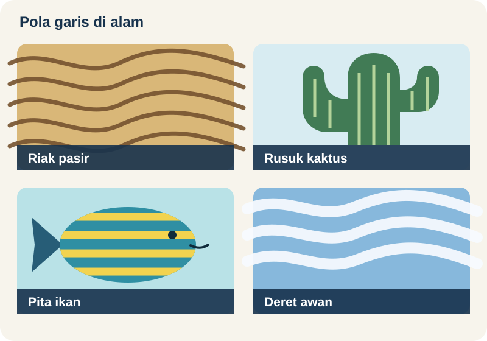

Gambar 10.1. Pola garis di alam: riak pasir, rusuk kaktus saguaro, pita warna pada tubuh ikan, dan struktur gulungan pada awan. [Deskripsi Gambar][/caption]Pola (lihat Gambar 10.1), seperti garis dan bintik pada kulit hewan atau riak pasir di pantai, sangat umum dijumpai di alam dan dalam eksperimen laboratorium yang dikendalikan dengan cermat. Pola biasanya muncul dalam sistem yang didorong jauh dari kesetimbangan oleh gaya luar atau sumber energi. Ketika gaya penggerak lebih besar daripada yang diperlukan untuk mengimbangi gaya inersia, sistem menanggapinya dengan menata ulang dirinya menjadi struktur periodik yang disebut pola. Ada banyak jenis pola, seperti gulungan, persegi, atau heksagon, dan pola tersebut dapat bersifat stasioner atau dinamis. Kajian tentang sistem pembentuk pola telah menjadi bidang penelitian aktif dalam fisika, kimia, optika nonlinear, dan matematika terapan selama lebih dari setengah abad[footnote]Lihat, misalnya, buku karya P. Ball yang berjudul The Self-made Tapestry: Pattern formation in nature (Oxford, New York, 1999).[/footnote]. Selanjutnya, kita akan membahas secara singkat pola Turing, mengkaji sebuah model kanonik pembentuk pola yang dikenal sebagai persamaan Swift-Hohenberg kompleks, dan membahas model reaksi-difusi untuk pola vegetasi. Gambar 10.2. Simulasi numerik persamaan Swift-Hohenberg kompleks dengan syarat batas periodik yang memperlihatkan pola garis dan heksagon. [Deskripsi Gambar][/caption]Kita akan mengkaji pembentukan pola melalui satu model yang disebut persamaan Swift-Hohenberg kompleks. Bergantung pada apakah koefisien model ini real atau kompleks, pola stasioner atau pola yang merambat akan teramati. Gambar 10.2 memperlihatkan pola garis dan heksagon yang dihasilkan model ini. Teori umum pembentukan pola[footnote]Untuk tinjauan, lihat misalnya M.C. Cross dan P.C. Hohenberg, Pattern formation outside of equilibrium, Rev. Mod. Phys. 65, 851-1112 (1993), serta A. C. Newell, T. Passot, dan J. Lega, Order parameter equations for patterns, Ann. Rev. Fluid Mech. 25, 399-453 (1993).[/footnote] menjelaskan mengapa model yang berbeda dapat menghasilkan pola serupa dan, sebagai akibatnya, mengapa sistem kimia, fisika, atau biologi yang berbeda dapat memperlihatkan pola yang tampak serupa. Teori ini juga membenarkan penggunaan model generik pembentuk pola untuk memahami mekanisme yang terlibat dalam pembentukan pola, seperti yang kita lakukan pada bagian berikutnya.
Perhatikan persamaan diferensial parsial berikut
Gambar 10.2. Simulasi numerik persamaan Swift-Hohenberg kompleks dengan syarat batas periodik yang memperlihatkan pola garis dan heksagon. [Deskripsi Gambar][/caption]Kita akan mengkaji pembentukan pola melalui satu model yang disebut persamaan Swift-Hohenberg kompleks. Bergantung pada apakah koefisien model ini real atau kompleks, pola stasioner atau pola yang merambat akan teramati. Gambar 10.2 memperlihatkan pola garis dan heksagon yang dihasilkan model ini. Teori umum pembentukan pola[footnote]Untuk tinjauan, lihat misalnya M.C. Cross dan P.C. Hohenberg, Pattern formation outside of equilibrium, Rev. Mod. Phys. 65, 851-1112 (1993), serta A. C. Newell, T. Passot, dan J. Lega, Order parameter equations for patterns, Ann. Rev. Fluid Mech. 25, 399-453 (1993).[/footnote] menjelaskan mengapa model yang berbeda dapat menghasilkan pola serupa dan, sebagai akibatnya, mengapa sistem kimia, fisika, atau biologi yang berbeda dapat memperlihatkan pola yang tampak serupa. Teori ini juga membenarkan penggunaan model generik pembentuk pola untuk memahami mekanisme yang terlibat dalam pembentukan pola, seperti yang kita lakukan pada bagian berikutnya.
Perhatikan persamaan diferensial parsial berikut
$latex \displaystyle \begin{align*}\frac{\partial \psi}{\partial t} = & (\mu + i \nu) \psi - (\alpha + i \beta) \left(\Omega + \frac{\partial^2}{\partial x^2} + \frac{\partial^2}{\partial y^2}\right)^2 \psi \\ & + i \eta \left(\frac{\partial^2}{\partial x^2} + \frac{\partial^2}{\partial y^2}\right) \psi - (\gamma + i \delta) |\psi|^2 \psi - \zeta |\psi|^2, \qquad (10.1)\end{align*}$
dengan semua parameter bernilai real, $latex \alpha > 0$, $latex \gamma > 0$, dan $latex \psi(x,y,t)$ secara a priori bernilai kompleks. Persamaan ini merupakan suatu versi persamaan Swift-Hohenberg[footnote] J. Swift dan P.C. Hohenberg, Hydrodynamic fluctuations at the convective instability, Phys. Rev. A 15, 319-328 (1977).[/footnote] dengan koefisien kompleks[footnote]J. Lega, J.V. Moloney, dan A.C. Newell, Swift-Hohenberg equation for lasers, Phys. Rev. Lett. 73, 2978-2981 (1994).[/footnote] dan suku kuadratik. Mudah dilihat bahwa $latex \psi=0$ merupakan suatu solusi, dan wajar untuk menanyakan dalam kondisi apa solusi itu juga stabil. Kita melanjutkan dengan cara yang sama seperti pada sistem persamaan diferensial biasa, yaitu melinearkan Persamaan (10.1) di sekitar solusi $latex \psi=0$. Persamaan hasil linearisasinya adalah$latex \displaystyle \begin{align*} \frac{\partial \psi}{\partial t} = & (\mu + i \nu) \psi - (\alpha + i \beta) \left(\Omega + \frac{\partial^2}{\partial x^2} + \frac{\partial^2}{\partial y^2}\right)^2 \psi \\ & + i \eta \left(\frac{\partial^2}{\partial x^2} + \frac{\partial^2}{\partial y^2}\right) \psi. \qquad (10.2)\end{align*}$
Pada umumnya, kita tertarik pada sistem yang membentang dalam ruang dan cukup besar untuk memungkinkan pola berkembang (makna "cukup besar" akan diperjelas sebentar lagi). Karena itu, kita hanya meninjau ketakstabilan yang berkembang di bagian dalam sistem, dan menganggap bahwa $latex \psi$ dapat diuraikan menjadi mode-mode Fourier. Mode Fourier $latex u_{\vec k} \equiv a_{\vec k}\, \exp(i \vec k \cdot \vec r)$ dengan vektor gelombang $latex \vec k = (k_x, k_y)$ merupakan fungsi eigen operator linear, dengan nilai eigen $latex \lambda_{\vec k}$ yang diberikan oleh$latex \lambda_{\vec k} = \mu + i \nu - (\alpha + i \beta) (\Omega - k_x^2 - k_y^2)^2 - i \eta (k_x^2 + k_y^2).$
Dengan demikian, laju pertumbuhan mode ini adalah$latex \sigma_k = \operatorname{Re}(\lambda_{\vec k}) = \mu - \alpha (\Omega - k^2)^2,$
dengan $latex k = \sqrt{k_x^2 + k_y^2} = ||\vec k||$. Jadi, setiap mode Fourier tumbuh (atau meluruh) dengan laju yang hanya bergantung pada magnitudo $latex k$ dari vektor gelombang $latex \vec k$ yang bersangkutan, bukan pada arahnya. Jika $latex \mu < 0$, semua mode Fourier meluruh dan solusi $latex \psi = 0$ stabil secara linear. Ketika $latex \mu$ meningkat, beberapa mode Fourier akan menjadi tak stabil. [caption id="attachment_255" align="alignleft" width="300"] Gambar 10.3. Sketsa grafik laju pertumbuhan σk sebagai fungsi k ≥ 0, untuk 0 < μ < α Ω2. (a) Ω < 0; (b) Ω > 0. [Deskripsi Gambar][/caption]
Jika $latex \Omega < 0$, grafik $latex \sigma_k$ sebagai fungsi $latex k \ge 0$ bersifat monoton (lihat Gambar 10.3.a), dan mode Fourier pertama yang menjadi tak stabil adalah mode $latex k = 0$. Ketakstabilan ini terjadi pada $latex \mu = \alpha\, \Omega^2$. Sebaliknya, jika $latex \Omega > 0$, maka $latex \sigma_k$ mencapai maksimum pada $latex k = \sqrt \Omega \equiv k_c$ (lihat Gambar 10.3.b), dan mode-mode dengan $latex k = k_c$ menjadi tak stabil ketika $latex \mu$ meningkat melewati nol. Dalam kasus ini, kita memperkirakan terbentuknya suatu pola di atas ambang dengan panjang karakteristik $latex l_c = 2 \pi / k_c$. Karena itu, ukuran sistem tempat pola tersebut hendak diamati harus jauh lebih besar daripada $latex l_c$.
Di atas ambang, suku-suku nonlinearlah yang menentukan pola mana yang terpilih. Biasanya, jika terdapat suku kuadratik (yaitu jika $latex \zeta \ne 0$ dalam Persamaan (10.1)), maka pola heksagonal diamati di dekat ambang. Sebaliknya, jika suku kubik dominan, gulungan (atau garis-garis) lebih banyak muncul. Jika bagian imajiner koefisien-koefisien dalam (10.1) dibuat nol, pola yang berkembang di atas ambang bersifat stasioner. Jika tidak, pola tersebut bergantung pada waktu. Aspek-aspek ini dan aspek lain dari dinamika Persamaan (10.1), termasuk ketakstabilan sekunder dan ketakteraturan ruang-waktu, dapat dieksplorasi dengan antarmuka GUI MATLAB bernama Patterns. Antarmuka ini memungkinkan pengguna memilih parameter dan memulai simulasi dari kondisi awal acak yang kecil. Cuplikan berkode warna dari bagian real solusi $latex \psi$ ditampilkan pada waktu-waktu berturut-turut selama simulasi berlangsung. Setelah simulasi selesai, parameter baru dapat dimasukkan dan simulasi baru kemudian dapat dimulai kembali dari solusi terakhir.
Teori pembentukan pola[footnote]Lihat dua artikel tinjauan yang disebutkan di atas.[/footnote] menyediakan cara untuk mendeskripsikan dinamika nonlinear suatu sistem pembentuk pola di dekat dan di atas ambang. Namun, pembahasan lengkap mengenai topik ini berada di luar cakupan catatan ini. Pada bagian berikutnya, kita akan menyinggung secara singkat model reaksi-difusi untuk mendeskripsikan pola vegetasi di wilayah semiarid.
Gambar 10.3. Sketsa grafik laju pertumbuhan σk sebagai fungsi k ≥ 0, untuk 0 < μ < α Ω2. (a) Ω < 0; (b) Ω > 0. [Deskripsi Gambar][/caption]
Jika $latex \Omega < 0$, grafik $latex \sigma_k$ sebagai fungsi $latex k \ge 0$ bersifat monoton (lihat Gambar 10.3.a), dan mode Fourier pertama yang menjadi tak stabil adalah mode $latex k = 0$. Ketakstabilan ini terjadi pada $latex \mu = \alpha\, \Omega^2$. Sebaliknya, jika $latex \Omega > 0$, maka $latex \sigma_k$ mencapai maksimum pada $latex k = \sqrt \Omega \equiv k_c$ (lihat Gambar 10.3.b), dan mode-mode dengan $latex k = k_c$ menjadi tak stabil ketika $latex \mu$ meningkat melewati nol. Dalam kasus ini, kita memperkirakan terbentuknya suatu pola di atas ambang dengan panjang karakteristik $latex l_c = 2 \pi / k_c$. Karena itu, ukuran sistem tempat pola tersebut hendak diamati harus jauh lebih besar daripada $latex l_c$.
Di atas ambang, suku-suku nonlinearlah yang menentukan pola mana yang terpilih. Biasanya, jika terdapat suku kuadratik (yaitu jika $latex \zeta \ne 0$ dalam Persamaan (10.1)), maka pola heksagonal diamati di dekat ambang. Sebaliknya, jika suku kubik dominan, gulungan (atau garis-garis) lebih banyak muncul. Jika bagian imajiner koefisien-koefisien dalam (10.1) dibuat nol, pola yang berkembang di atas ambang bersifat stasioner. Jika tidak, pola tersebut bergantung pada waktu. Aspek-aspek ini dan aspek lain dari dinamika Persamaan (10.1), termasuk ketakstabilan sekunder dan ketakteraturan ruang-waktu, dapat dieksplorasi dengan antarmuka GUI MATLAB bernama Patterns. Antarmuka ini memungkinkan pengguna memilih parameter dan memulai simulasi dari kondisi awal acak yang kecil. Cuplikan berkode warna dari bagian real solusi $latex \psi$ ditampilkan pada waktu-waktu berturut-turut selama simulasi berlangsung. Setelah simulasi selesai, parameter baru dapat dimasukkan dan simulasi baru kemudian dapat dimulai kembali dari solusi terakhir.
Teori pembentukan pola[footnote]Lihat dua artikel tinjauan yang disebutkan di atas.[/footnote] menyediakan cara untuk mendeskripsikan dinamika nonlinear suatu sistem pembentuk pola di dekat dan di atas ambang. Namun, pembahasan lengkap mengenai topik ini berada di luar cakupan catatan ini. Pada bagian berikutnya, kita akan menyinggung secara singkat model reaksi-difusi untuk mendeskripsikan pola vegetasi di wilayah semiarid.
$latex \begin{align*} \displaystyle \frac{\partial w}{\partial t} & = a - w - w\,n^2 + v \frac{\partial w}{\partial x}, \\ \displaystyle \frac{\partial n}{\partial t} & = w\,n^2 - m\, n + \left(\frac{\partial^2}{\partial x^2} + \frac{\partial^2}{\partial y^2}\right)n,\end{align*}$
di mana $latex a$ menyatakan masukan air melalui hujan, $latex v$ adalah laju pengangkutan air menuruni lereng (ke arah $latex -x$), $latex w\, n^2$ menyatakan pertambahan biomassa akibat konsumsi air, dan $latex m$ adalah laju kematian tumbuhan. Selain itu, air menguap dengan laju $latex w$, dan difusi $latex n$ merepresentasikan penyebaran petak-petak vegetasi. Setelah menentukan titik-titik kesetimbangan (solusi stasioner dan seragam) model ini, penulis menelaah kestabilan linearnya. Gambar 2 dalam artikel Klausmeier tahun 1999 menampilkan himpunan aras panjang gelombang pola yang diperkirakan tumbuh di atas ambang pada bidang parameter $latex (a,m)$, untuk suatu nilai tetap $latex v$. Lebih tepatnya, bidang $latex (a,m)$ dapat dibagi menjadi tiga daerah: satu daerah tempat titik tetap yang bersesuaian dengan ketiadaan vegetasi bersifat stabil, satu daerah tempat titik tetap yang bersesuaian dengan vegetasi homogen bersifat stabil, dan daerah di antaranya tempat analisis kestabilan linear memprediksi keberadaan pola vegetasi. Simulasi numerik model dalam rezim terakhir ini mengonfirmasi adanya pita-pita vegetasi yang merambat di medan berbukit dan petak-petak vegetasi di tanah datar. Laju $latex v$ aliran air menuruni lereng menjadi ukuran kemiringan lereng.$latex \psi(x,y,t) = \exp[i(\omega t + q x + p y)], \qquad \omega,\, q,\,p\, \in \mathbb{R}.$
Cobalah menyatakan syarat keberadaan serta $latex \omega$, $latex q$, dan $latex p$ dalam parameter-parameter persamaan tersebut. Apakah solusinya tunggal?$latex \psi(x,y,t) = \exp[i(\omega t + q x + p y)], \qquad \omega,\, q,\,p\, \in \mathbb{R}.$
untuk Persamaan (10.2) dengan $latex \mu \ne 0$. Cobalah menyatakan syarat keberadaan serta $latex \omega$, $latex q$, dan $latex p$ dalam parameter-parameter persamaan tersebut. Apakah solusinya tunggal?$latex \psi(x,y,t) = \exp[\lambda t + i(\omega t + q x + p y)], \qquad \lambda,\,\omega,\, q,\,p\, \in \mathbb{R}$
untuk Persamaan (10.2) dengan $latex \mu \ne 0$. Cobalah menyatakan $latex \lambda$, $latex \omega$, $latex q$, dan $latex p$ dalam parameter-parameter persamaan tersebut. Apakah solusinya tunggal?